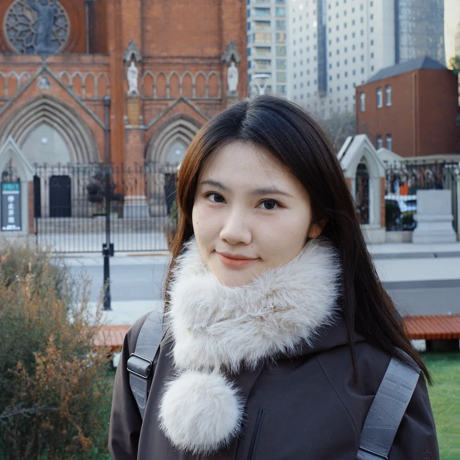
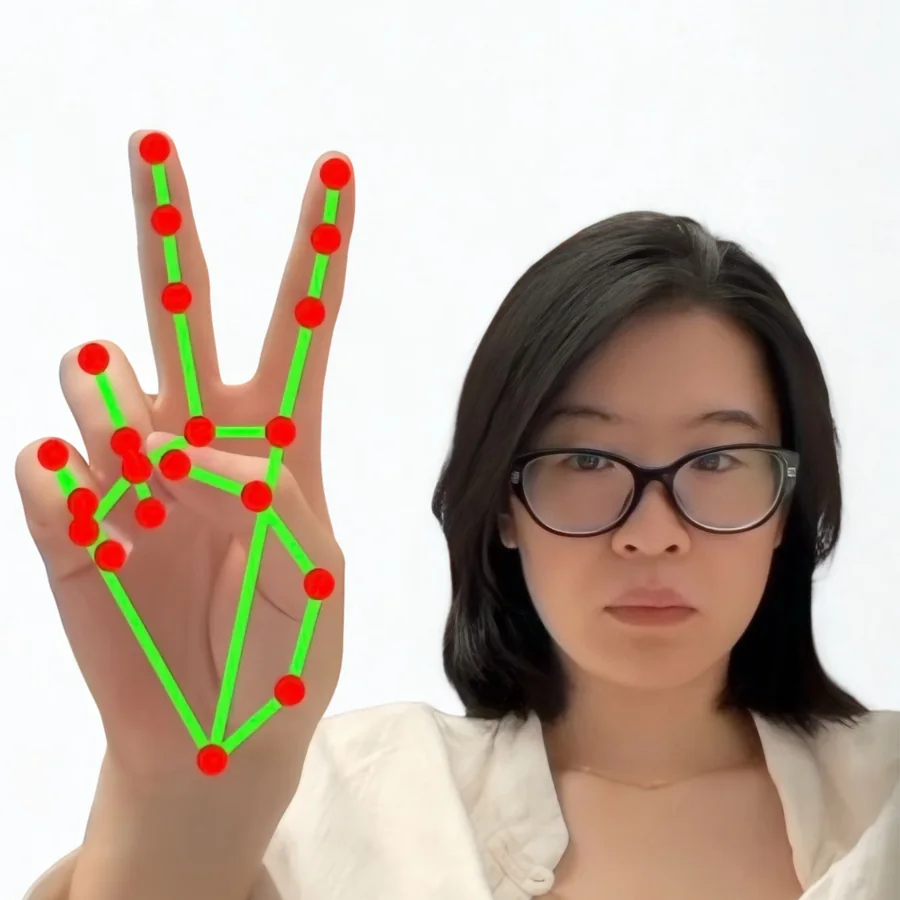
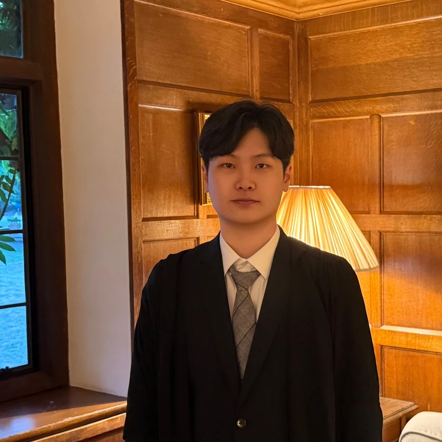
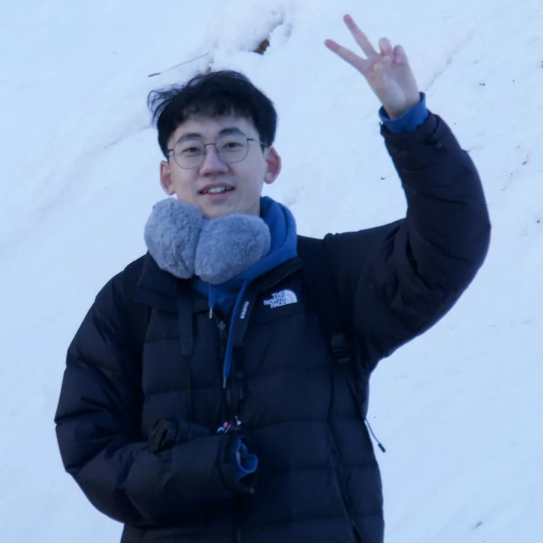

PhD · 2026–present
Wanting Dong
MEng from PKU 🇨🇳


We are a growing team of researchers across HCI, XR, AI, robotics and systems engineering.
PhD · 2026–present
MEng from PKU 🇨🇳

PhD · 2026–present
MA from Tsinghua 🇨🇳

PhD · 2026–present
MSc from HKU 🇭🇰
PI & Director
PhD from Cambridge 🇬🇧
Post-doc
PhD from Univ of Sydney 🇦🇺

RA · 2026–present
MPhil from Cambridge 🇬🇧

PhD · 2026–present
MSc from Univ of Stuttgart 🇩🇪
RA · 2026–present
MPhil from HKUST(GZ) 🇨🇳

We collaborate with researchers at Cambridge, Monash, Carnegie Mellon, Google, HKUST, Institut Polytechnique de Paris, Sony CSL, UCL, Konstanz and Tokyo—and warmly welcome new academic and industry partnerships.